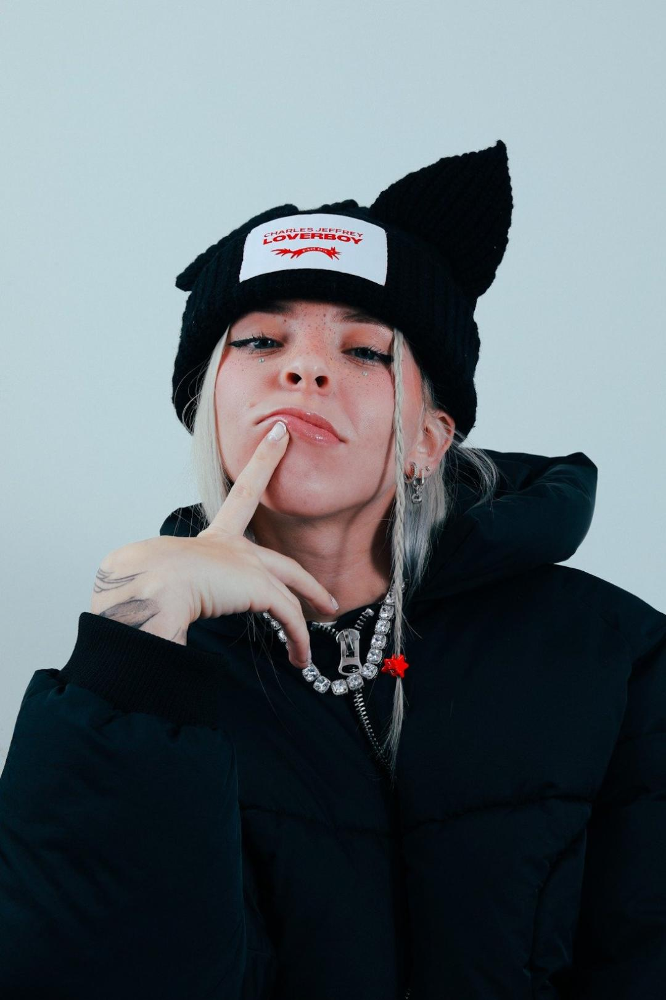

María Victoria Ramírez de Arellano Cardona es una artista que se dedica a componer y cantar música urbana (especialmente rap y trap latino y reguetón) bajo su nombre artístico Young Miko. Empezó su carrera en 2018 y el año pasado publicó su EP debut **Trap Kitty. **Su aesthetic es una mezcla de anime y música urbana que combina a la perfección con la era actual de su género y que le encanta a sus fans.
Ganó importante popularidad con la canción "Lisa", acumulando más de veinte millones de reproducciones en YouTube. Otros de sus sencillos, se titulan "Riri", "Putero" y "Trending".
En 2019, Young Miko ya había subido algunos de sus temas en SoundCloud. Sin embargo, su debut oficial fue dos años después.

Young Miko es una de las nuevas estrellas de la música urbana de Puerto Rico, quien con poco tiempo de trayectoria musical, logró mostrar su talento llamando la atención de reconocidos cantantes, entre ellos la argentina Cazzu, con quien presentó el tema "Brinca" en 2023.
Anteriormente, había publicado los temas "Pull Up", "Puerto Rican Mami", "Katana" junto al exponente urbano Leebrian y "Vendetta", con el argentino Villano Antillano, sumando más de cuatro millones de reproducciones en YouTube.
Su tema debut fue "105 Freestyle", el cual le permitió mostrar su esencia en el trap, además de su flow, según el ojo crítico. Regresando al 2023, logró éxito con el sencillo "Lisa", siendo hasta el momento el que ha acumulado más reproducciones en su canal de YouTube. "Trap Kitty" es el nombre de su disco en el que incluyó nueve canciones, entre ellas, "Acento", "Smoke Brak", "Bi" y "Stripper Diaries". Young Miko promete mucho en la industria musical de Puerto Rico y Latinoamérica. Sus colaboraciones con poco tiempo en la escena musical ya son numerosas, compartiendo temas con intérpretes de reguetón y trap como Luar La L, Brray, Feid, Lunay y Lyanno, entre muchos otros, cautivándolos con su estilo a todos.
“Trap Kitty” es el EP que estrenará la puertorriqueña Young Miko, con el que quiere traer una propuesta única y refrescante para quienes lo escuchen.Esta producción está compuesta por siete temas y dos interludios que proyectan versatilidad y que a la vez permitirán a los seguidores conocer más a fondo a la artista, según ella misma señaló.
“Trap Kitty” es el resultado de nueve meses de trabajo. Sus temas cuentan con un orden específico para hacer que el oyente emprenda un viaje presentado como “una experiencia completa”.
Young Miko desde el 2022 que se abrió pasó con su primer EP, “Trap Kitty”, ha evolucionado de vulnerable a segura y rumbera, adjetivos que empapan el álbum que se siente personal sin caer en lo aburrido.
El álbum que tardó dos años en dar la luz, es abiertamente queer. Sobre una mujer que habla de otras mujeres, a veces en plan de coquetear y otras veces con el corazón roto. Y es que la artista en su primer álbum busca conectar con aquel que la escuche compartiendo experiencias y lugares personales , por ejemplo, en el estreno del proyecto para la plataforma de Apple Music.